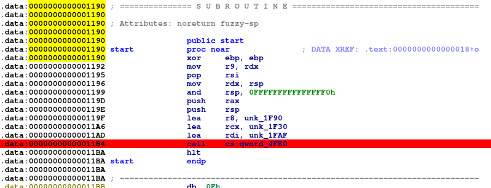
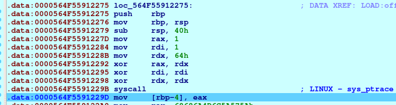
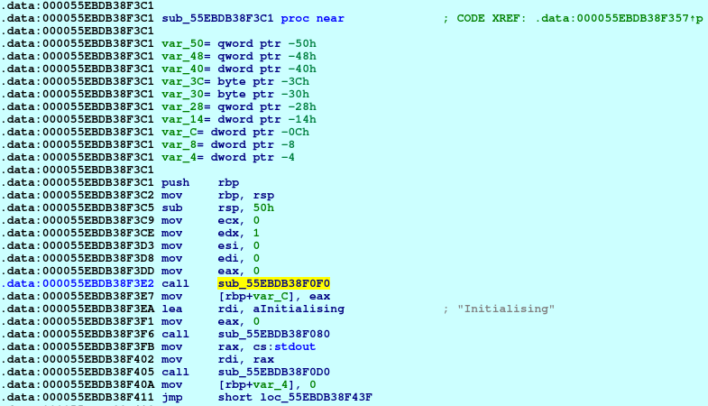
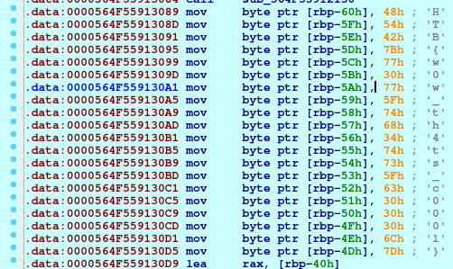
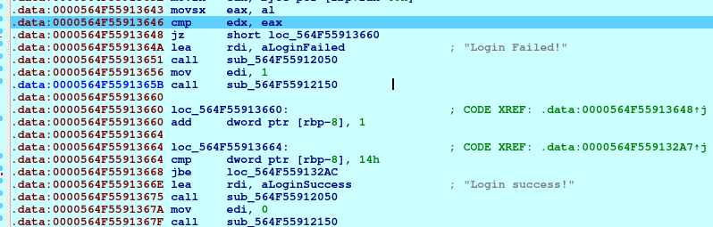

Headache
After downloading the file, we unzip and try to find out what we’re working
with.
First we’ll run file on it:
$ file headache headache: ELF 64-bit LSB pie executable, x86-64, version 1 (SYSV), dynamically linked, interpreter /lib64/ld-linux-x86-64.so.2, stripped
It is a 64-bit ELF file, dynamically linked and it is also stripped. Since it is
an ELF file, it is possible to run elfparser on it:
$ elfparser -f headache -r headache - Score: 40 [Family: Undetermined] ---- Scoring Reasons ---- 30 -> Found 2+ PT_LOAD. Possible post-compilation addition of code (cryptor or packer) 10 -> Anti debug techniques
The binary has some kind of anti-debug technique, let’s assume its ptrace. The
binary also has two PT_LOAD segments that will be loaded into memory.
Running strings on the file doesn’t show anything useful, except this:
$ strings headache
...
a15abe90c112d09369d9f9da9a8c046e
Initialising
Enter the key:
Login Failed!
Login success!
open:
mmap:
mprotect:
;*3$"
ABCDEFGHIJKLMNOPQRSTUVWXYZabcdefghijklmnopqrstuvwxyz0123456789+/
HTB{not_so_easy_lol}
GCC: (Debian 8.3.0-19) 8.3.0
.data
.text
.shstrtab
There is a flag in there, but as the name suggests, it is a fake flag. It is
time to fire up IDA Pro and check whatever is in there. After loading the
binary, there isn’t much information about the flow of the program, but in
_init_proc we can see that rax is called, so this probably means we have to
debug the binary to understand how it works. Before that, running it on the
terminal results in this:
$ ./headache Initialising..... Enter the key: test-key Login Failed!
It prints out Initialising....., with some kind of sleep function being ran
between the . print out. It then asks for an input key, and then prints Login
Failed!.
Having a general overview of the way it works on the surface, it is time to
debug in IDA Pro. Once there is a breakpoint in the first call instruction in
start subroutine, we should start the debug session:

After some steps and entering in the functions that are called, we go through a
ptrace check using a syscall instruction (anti-debugging). After the
syscall, the value of eax holds the return value 0xFFFFFFFFFFFFFFFF which
is -1, as we can verify through the ptrace man pages:
RETURN VALUE
On success, the PTRACE_PEEK* requests return the requested data (but see NOTES), the PTRACE_SECCOMP_GET_FILTER request returns the number of instructions in the BPF program, and other requests return zero.
On error, all requests return -1, and errno is set to indicate the error. Since the value returned by a successful PTRACE_PEEK* request may be -1, the caller must clear errno before the call, and then check it afterward to
determine whether or not an error occurred.
The result in eax is -1 therefore it is considered an error.

In the next instruction, the result code of ptrace is moved to the stack. But
we have to bypass this check, therefore, before stepping, we just change eax
to 0x0, since it is a valid return value for ptrace, and then we proceed.
After some steps, in the function where it prints out text to the command-line,
there is another ptrace call, but throught libc and not through a syscall.

While stepping, we should go through the different functions that print out strings to the command-line, until we arrive at a point where the function for input is called. Before writing anything, there are some things that should be considered. First, in the disassembly, it is possible to see a flag a bit after the input instructions:

The flag is HTB{w0w_th4ts_c000l}. And no, this is still not the real flag.
This challenge as many troll flags.
Second, after the flag instructions, there is a call to __strlen_avx2 and a
comparison with the number 20 and a jz right after, that goes over the
“Login Failed!” code. Therefore, it seems we have to input a 20 character string
(I don’t think the content matters, could be aaaaaaaaaaaaaaaaaaaa). We keep
going, and eventually another troll flag can be found in the stack: HTB{th4t_w4s_h4rd}.
And then we hit a very large block of code with a lot of mov, add, xor,
shl and many other operations:
.data:0000564F559132AC loc_564F559132AC: ; CODE XREF: .data:0000564F55913668↓j .data:0000564F559132AC mov eax, [rbp-8] .data:0000564F559132AF movzx eax, byte ptr [rbp+rax-0C0h] .data:0000564F559132B7 mov [rbp-19h], al .data:0000564F559132BA movzx eax, byte ptr [rbp-19h] .data:0000564F559132BE shr al, 5 .data:0000564F559132C1 mov edx, eax .data:0000564F559132C3 movzx eax, byte ptr [rbp-19h] .data:0000564F559132C7 shl eax, 3 .data:0000564F559132CA or eax, edx .data:0000564F559132CC mov [rbp-19h], al .data:0000564F559132CF not byte ptr [rbp-19h] .data:0000564F559132D2 add byte ptr [rbp-19h], 2Fh ; '/' .data:0000564F559132D6 xor byte ptr [rbp-19h], 26h .data:0000564F559132DA movzx eax, byte ptr [rbp-19h] .data:0000564F559132DE shr al, 5 .data:0000564F559132E1 mov edx, eax .data:0000564F559132E3 movzx eax, byte ptr [rbp-19h] .data:0000564F559132E7 shl eax, 3 .data:0000564F559132EA or eax, edx .data:0000564F559132EC mov [rbp-19h], al .data:0000564F559132EF sub byte ptr [rbp-19h], 2 .data:0000564F559132F3 neg byte ptr [rbp-19h] .data:0000564F559132F6 movzx eax, byte ptr [rbp-19h] .data:0000564F559132FA shr al, 2 .data:0000564F559132FD mov edx, eax .data:0000564F559132FF movzx eax, byte ptr [rbp-19h] .data:0000564F55913303 shl eax, 6 .data:0000564F55913306 or eax, edx .data:0000564F55913308 mov [rbp-19h], al .data:0000564F5591330B not byte ptr [rbp-19h] .data:0000564F5591330E add byte ptr [rbp-19h], 47h ; 'G' .data:0000564F55913312 not byte ptr [rbp-19h] .data:0000564F55913315 xor byte ptr [rbp-19h], 43h .data:0000564F55913319 sub byte ptr [rbp-19h], 7Bh ; '{' .data:0000564F5591331D movzx eax, byte ptr [rbp-19h] .data:0000564F55913321 shr al, 5 .data:0000564F55913324 mov edx, eax .data:0000564F55913326 movzx eax, byte ptr [rbp-19h] .data:0000564F5591332A shl eax, 3
Here we can see that the value pointed to by [rbp-19h] is used a lot. If we go
through the loop till the end, before a cmp instruction, we see that
[rbp-19h] now holds the character H. But now there is a comparison being done,
and it does not return zero, therefore it exits the program after printing
“Login Failed!”.

We have to change the value of edx to match the value of eax so the jz can
execute the jump. After some steps, we can see that we’re in a loop, which
executes that big block of code each time. This second time, after going through
the loop, [rbp-19h] holds the character T. The third time, it holds the
character B. It is now easy to understand where this is going. Each loop
iteration will put the next character of the flag in [rbp-19h] and we have to
keep track of it until the end of the loop. After the loop ends, we have the
flag and “Login success!” is printed out.